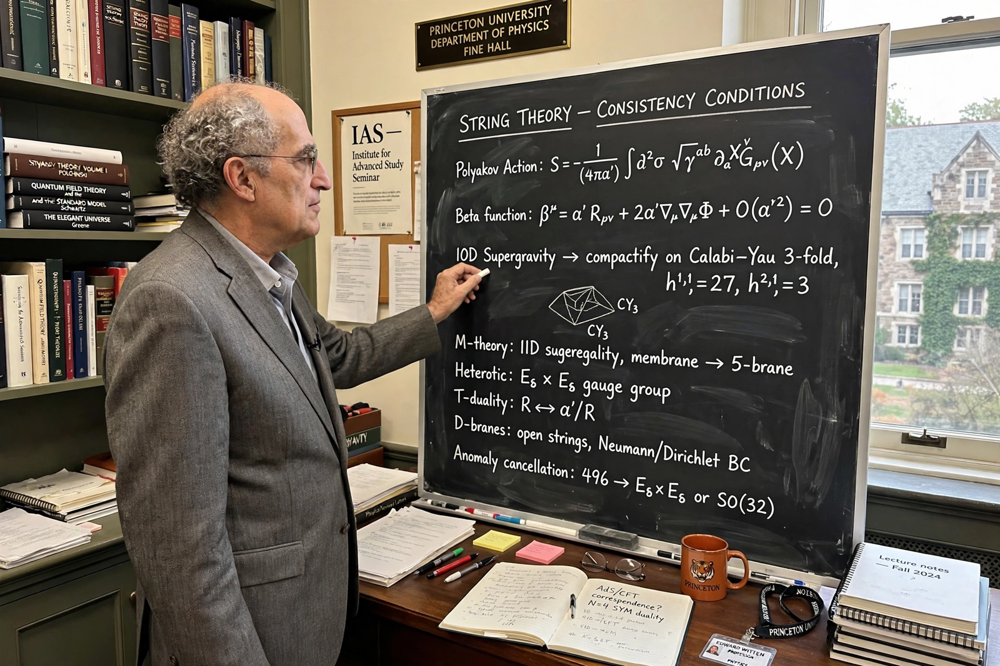

Edward Witten
| Born | 26 August 1951, Baltimore, Maryland, US |
|---|---|
| Known for | M-theory, topological quantum field theory, Seiberg–Witten theory |
| Awards | Fields Medal (1990); Breakthrough Prize (2012) |
| Institutions | Institute for Advanced Study, Princeton |

[Image: Photograph of Edward Witten at a blackboard covered in string theory equations]Edward Witten (born 26 August 1951) is an American theoretical physicist and mathematician, a professor at the Institute for Advanced Study in Princeton. Widely regarded as the world's leading string theorist, he announced M-theory in 1995, unifying the five superstring theories, and has been the central figure of String theory for four decades. He is the only physicist to have won the Fields Medal (1990), for his mathematical work including a proof of the positive energy theorem and the application of quantum field theory to knot theory (the Jones polynomial).
Witten's influence runs from physics into pure mathematics: his insights have generated fields (topological quantum field theory, mirror symmetry as mathematics, Seiberg–Witten invariants replacing Donaldson theory) and his conjectures have steered mathematics prize committees for a generation. A student of David Gross at Princeton (PhD 1976), he has remained famously soft-spoken and famously the benchmark against whom theoretical physicists measure themselves.
M-theory announcement
At the Strings '95 conference, Witten showed that the strongly coupled limit of type IIA string theory grows an eleventh dimension — identifying it with the eleven-dimensional supergravity known since 1978. The talk restructured the field overnight: dualities replaced rivalry, and the search for a non-perturbative formulation of quantum gravity became a coherent, if still unfinished, programme.